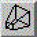
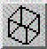

|  |  |
| indicates
perspective projection |
indicates
orthogonal projection |
By pressing the Projection Mode button you can switch between
The choice of the projection mode changes
name and function of the Dolly/Zoom Wheel (see Wheels)
(physical distance of the camera is changed like moving the camera on a dolly)
(focussing distance of the camera is changed like using a zoom lens) |
The options ViewAll,
SeekMode
and ProjectionMode change your view of the object(s) in the viewer area.